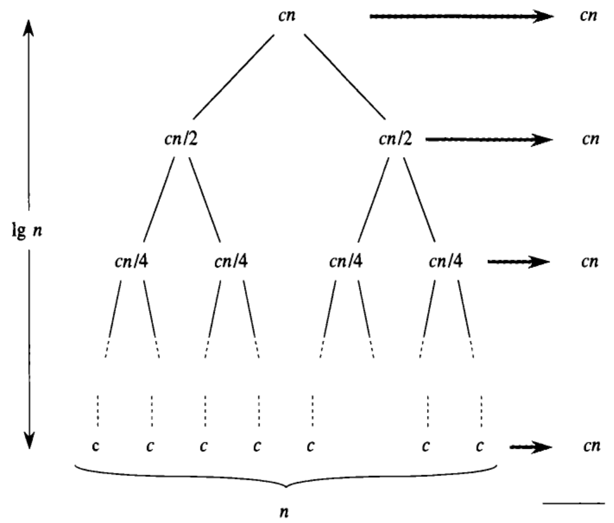

Алгоритмизация и Программирование
Морозов Владимир Игоревич
«Разделяй и властвуй»
Определение
- Метод «Разделяй и властвуй» (или Метод декомпозиции) – один из наиболее простых подходов к разработке алгоритмов, который, тем не менее, зачастую позволяет создавать наиболее эффективные алгоритмы.
- При данном подходе большая задача разбивается на несколько подзадач меньшего размера, каждая из которых так же рекурсивно разбивается до достижения базового случая. После этого решения маленьких подзадач собираются в решение изначальной задачи.
Пример декомпозиции

Основные шаги
Общий принцип построения таких алгоритмов включает три шага:
- Разделение задачи на несколько подзадач, которые представляют собой меньшие экземпляры той же задачи.
- Властвование над подзадачами путём их рекурсивного решения. Если подзадачи достаточно малы, они могут решаться непосредственно.
- Комбинирование решений подзадач в решение исходной задачи.
Рекурсия
- Декомпозиция естественным образом связана с понятием рекурсии – ситуацией, когда функция вызывает сама себя с другими аргументами
- Чтобы рекурсия не была бесконечной, выделяют базовый случай – ситуацию, когда, вместо рекурсивного вызова самой себя, функция сразу выдаёт ответ
- Как правило, базовый случай наступает, когда размер задачи достаточно мал для непосредственного решения
Пример рекурсивного вычисления числа Фибоначчи
def fib(n):
# Базовый случай
if n == 1 or n == 2:
return 1
# Рекурсивный вызов
return fib(n - 1) + fib(n - 2)
Сортировка слиянием
- Отличным примером алгоритма, построенного по принципу «Разделяй и властвуй» является сортировка слиянием
- Алгоритм принимает на вход массив $a$, а также индексы $p$ и $r$ – левую и правую границу сортируемой части массива соответственно
- Слияние производится процедурой Merge из предыдущей лекции
Сортировка слиянием
merge_sort(a, p, r):
- Если $p < r$, выполнить:
- Вычислить $q = \lfloor \frac{p + r}{2} \rfloor$
- Выполнить merge_sort(a, p, q)
- Выполнить merge_sort(a, q + 1, r)
- Слить фрагмент массива $a$ от $q$ до $r$ с серединой в $q$
Этапы сортировки слиянием
- Этап разделения включает расчёт среднего индекса $q$ и рекурсивный вызов алгоритма
- Этап властвования заключается в рекурсивной работе алгоритма и отсутствии действий, когда достигнут базовый случай
- Этап комбинирования состоит в слиянии результатов рекурсивных вызовов процедурой Merge
Анализ сортировки слиянием
Сложность данного алгоритма, как и всех прочих алгоритмов с декомопзицией можно записать в виде рекуррентного соотношения:
$$ \begin{equation*} T(N) = \begin{cases} c, при\ N = 1\\ 2T(\frac{N}{2}) + cN, при\ N > 1 \end{cases} \end{equation*} $$Анализ сортировки слиянием
- $c$ в данном выражении означает некоторое константное время
- Чтобы получить вычислительноую сложность в $O$-нотации, необходимо решить рекуррентное соотношение
- Основной способ решения таких соотношений будет рассмотрен далее
- В данный момент ограничимся другим – деревом рекурсии
Дерево рекурсии
- Дерево рекурсии – древовидная структура, каждый узел в которой представляет собой один рекурсивный вызов
- В каждом узле дерева записывается время, затрачиваемое на данный вызов, не считая времени работы следующих рекурсивных вызовов
- Такие деревья позволяют удобно визуализировать рекурсивные алгоритмы и вычислять их сложность
Дерево рекурсии

Анализ сортировки слиянием
- На каждом уровне рекурсии выполняется вдвое больше рекурсивных вызовов, каждый из которых решает вдвое меньшую задачу
- Таким образом, т.к. высота дерева равна $\lfloor log_2(N) \rfloor$, всего понадобится $cNlog_2(N) + cN$ операций
- Тогда результирующая сложность составит $$O(Nlog_2(N))$$
Общий вид рекуррентного соотношения
Рекуррентные соотношения для большинства алгоритмов могут быть записаны в следующем общем виде:
$$T(N) = aT(\frac{N}{b}) + f(N)$$Общий вид рекуррентного соотношения
В приведённой формуле:
- $a \geqslant 1$ – количество рекурсивных вызовов на каждом уровне
- $b > 1$ – количество подзадач, на которые бьётся текущая задача
- $f(N)$ – время, необходимое на выполнение этапов разделения и слияния
Общий вид рекуррентного соотношения
Пример для сортировки слиянием:
$$T(N) = 2T(\frac{N}{2}) + \Theta(N)$$Решение данного соотношения:
$$T(N) = log_b(N) \cdot f(N) = \Theta(Nlog_2(N))$$Другие соотношения
- Рассмотрим другие соотношения, чтобы понять, что позволяет приходить к такому решению
- Для начала возьмём меньшую степень для $N$ в $f(N)$, т.е. пусть $f(N) = \Theta(N^0) = \Theta(1)$
- Также примем $a = 1$ и $b = 2$
- Построим дерево рекурсии
Дерево рекурсии

Анализ соотношения
- В данном случае сложность алгоритма, заданного таким соотношением составит $log_2(N) \cdot \Theta(1) = \Theta(log_2(N))$
- Примечательно, что это снова соответствует $log_b(N) \cdot f(N)$
- Также отметим, что данное соотношение соответствует алгоритму двоичного поиска
Другие соотношения
- Рассмотрим ещё одно соотношение, теперь с большей степенью для $N$
- Пусть $f(N) = \Theta(N^2)$
- Также примем $a = 9$ и $b = 3$
- Построим дерево рекурсии
Дерево рекурсии

Предварительный анализ дерева
Как видно, не все величины на дереве известны. Выведем их:
- Начнём с высоты дерева
- На каждом уровне размер отдельной подзадачи уменьшается в $b$ раз
- Тогда на $i$-ом уровне размер отдельной подзадачи равен $\frac{N}{b^i}$
- Задачи бьются до тех пор, пока объём отдельной подзадачи не станет равен $1$
Предварительный анализ дерева
Тогда: \begin{multline} \frac{N}{b^h} = 1\\ N = b^h\\ h = log_b(N), \end{multline} где $h$ – высота дерева.
Предварительный анализ дерева
- Теперь разберёмся с количеством листьев
- На каждом уровне создаётся в $a$ раз больше рекурсивных вызовов
- Тогда на $i$-ом уровне будет создано $a^i$ рекурсивных вызовов
- Листья находятся на $h$-ом уровне, а значит их количество равно $a^h$
Предварительный анализ дерева
Преобразуем, подставив значение $h$ и воспользовавшись свойством логарифмов: $$a^h = a^{log_b(N)} = N^{log_b(a)}$$ Теперь, когда все пробелы закрыты, снова построим дерево.
Дерево рекурсии

Анализ соотношения
- Проанализируем соотношение по дереву
- Для начала посчитаем сумму сложности каждого уровня
Анализ соотношения
- На первом уровне сложность, очевидно, равна $$f(N) = N^2$$
- На втором уровне сложность равна $$9f(\frac{N}{3}) = 9(\frac{N}{3})^2 = 9\frac{N^2}{9} = N^2$$
Анализ соотношения
- На третьем уровне сложность равна $$N^{log_b(a)}f(1) = N^{log_3(9)} \cdot 1 = N^2$$
Анализ соотношения
- Как видно, для всех уровней сложность равна $$\Theta(N^2)$$
- Как мы помним, всего таких уровней $$h + 1 = log_b(N) + 1$$
- А значит, общая сложность равна $$(log_b(N) + 1) \cdot N^2 = \Theta(N^2log_b(N))$$
Анализ соотношения
- Важно заметить, что мы снова получили сложность $T(N) = log_b(N) \cdot f(N)$
- Следует выяснить, что именно позволяет нам сохранять это равенство на совершенно разных рекуррентных соотношениях
- Рассмотрим подробнее значения каждого из элементов соотношения
Анализ соотношения
| № | $a$ | $b$ | $f(N)$ |
|---|---|---|---|
| 1 | $1$ | $2$ | $N^0$ |
| 2 | $2$ | $2$ | $N^1$ |
| 3 | $9$ | $3$ | $N^2$ |
Анализ соотношения
- Методом пристального взгляда на таблицу можно убедиться, что во всех трёх случая соблюдается одно важнейнее соотношение: $$f(N) = N^d\\d = log_b(a)$$
- Именно это соотношение позволяет сохранить хрупкий баланс, состоящий в том, что каждый уровень рекурсии вносит равный вклад в сложность
Другие случаи
- Посмотрим, что будет, если соотношение не соблюдается
- Если $d > log_b(a)$, каждый следующий уровень будет вносить всё меньший вклад в рекурсию, а значит, сложность будет определяться корнем дерева, то есть $$T(N) = f(N)$$
Другие случаи
- Если же $d < log_b(a)$, каждый следующий уровень будет вносить всё больший вклад в рекурсию, а значит, сложность будет определяться суммой листьев дерева, то есть $$T(N) = N^{log_b(a)}$$
Основная теорема
- Всё, рассмотренное ранее, позволяет нам сформулировать так называемую Основную теорему (Master theorem) об асимптотических оценках для рекуррентных соотношений
- Данная теорема требует соблюдения следующих предварительных условий:
- $T(N) = aT(\frac{N}{b}) + f(N)$
- $f(N) = \Theta(N^d)$
- $d \geqslant 0$
Основная теорема
$$ \begin{equation*} T(N) = \begin{cases} O(f(N)),&d > log_b(a),\\ O(N^{log_b(a)}),&d < log_b(a),\\ O(f(N) \cdot log_b(N)),&d = log_b(a).\\ \end{cases} \end{equation*} $$Границы применимости
- Как видно из предварительных условий, основная теорема применима только тогда, когда $f(N)$ – многочлен
- Это наиболее распространённая ситуация, поэтому с помощью основной теоремы можно решить большинство соотношений
- Если условие не выполняется, необходимо прибегнуть к непосредственному анализу дерева рекурсии и проверке полученного соотношения по индукции
Задача о паре ближайших точек
- Одной из задач, показываюших преимущество подхода «Разделяй и властвуй» является задача о паре ближайших точек
- Дано: $N$ координат точек в двумерной системе координат: $(x_i, y_i), i = \overline{1, N}$
- Найти: пару точек, декартово расстояние между которыми наименьшее
Решение методом грубой силы
- Простейший метод решения данной задачи – полный перебор всех возможных пар
- Сложность такого решения: $$\Theta(C_N^2) = \Theta(N^2)$$
Решение методом декомпозиции
- Провести вертикальную линию между точками так, чтобы по обе стороны от неё осталось равное количество точек
- Пока количество точек больше $3$, рекурсивно проводить разбиение
- Когда количество точек $\leqslant 3$, найти ближайшую пару методом грубой силы
Решение методом декомпозиции
- Получив результаты от двух рекурсивных вызовов, найти среди них наименьшее расстояние $d_{min}$
- Проверить все пары точек на расстоянии $d_{min}$ от разделительной линии
Решение методом декомпозиции
- На следующем слайде представлен пример с 9 точками от $A$ до $I$
- Пунктирными линиями показано изначальное разбиение точек, в данном случае изображено два этапа рекурсии
Шаги 1-2

Решение методом декомпозиции
- На следующем слайде красным цветом выделены точки, составляющие ближайшие пары в каждом из базовых случаев
- Для первой (слева направо) секции это точки $E$ и $D$, для второй – $A$ и $B$, для третьей – $C$ и $F$, для четвёртой – $H$ и $I$
Шаг 3

Решение методом декомпозиции
- На следующем слайде представлен пример объединения результатов двух рекурсивных вызовов
- Наименьшее расстояние из полученных было между точками $A$ и $B$, они выделены красным, это расстояние принято в качестве $d_{min}$
Шаг 4

Решение методом декомпозиции
- Полоса, в которой ведётся дальнейшая проверка, обозначена на следующем слайде линиями с более мелким пунктиром
- Среди точек, попавших в полосу, а именно: $A$, $B$ и $C$, ближайшими являются $A$ и $C$, которые находятся по разные стороны от разделяющей линии
- Точки $B$ и $C$ возвращаются в качестве решения
Шаг 5

Замечания по реализации
- Наибольший интерес для анализа такого алгоритма представляет случай, когда все точки "выстроены в столбик", т.е. их координаты по оси абсцисс совпадают
- В таком случае не важно, где проводить разделительную линию, нужно просто разбить точки на группы, объём которых отличается не более, чем на 1
- Однако тогда проверка точек, стоящих у границы, методом грубой силы займёт те же $O(N^2)$
Оптимизации
- Во-первых, можно идти от самой верхней точки к самой нижней (для этого понадобится отсортировать их по $y$-координате)
- Во-вторых, можно показать, что для такого обхода достаточно на каждую точку просматривать не более 5 следующих
- При таком подходе сложность каждой проверки снизится до $O(Nlog_2(N) + N) = O(Nlog_2(N))$
Оптимизации
- Представленная на предыдущем слайде оптимизация позволит снизить сложность всего алгоритма до $O(N(log_2(N))^2)$
- Однако, если сортировать базовые случаи и на каждом этапе рекурсии сливать результаты процедурой Merge, можно добиться сложности $O(Nlog_2(N))$
Другие алгоритмы
- По методу «Разделяй и властвуй» построено множество эффективных алгоритмов
- Далее будут кратко описаны лишь некоторые из них
Другие алгоритмы
- Алгоритм Штрассена позволяет умножать квадратные матрицы со сложностью $O(N^{log_27})$, что эффективнее умножения по определению за $O(N^3)$
- Алгоритм Карацубы позволяет перемножать
$N$-значные целые числа со сложностью $O(N^{log_23})$, что эффективнее обычного умножения "в столбик" за $O(N^2)$
Другие алгоритмы
- Задача о поиске подмассива с максимальной суммой в массиве с отрицательными и положительными значениями с помощью метода декомпозиции решается за $O(Nlog_2(N))$, тогда как решение методом грубой силы занимает $O(N^2)$
Полезные источники
- Томас Х. Кормен, Чарльз И. Лейзерсон, Рональд Л. Ривест, Клиффорд Штайн. Алгоритмы: построение и анализ, 3-е издание. Раздел 2.3. Глава 4: введение и разделы 4.4, 4.5 – Основная книга нашего курса.
- А.Левитин. Алгоритмы: введение в разработку и анализ. Глава 4: введение и раздел 4.6 – Более простая формулировка Основной теоремы и задача о паре ближайших точек
- Визуализация сортировки слиянием
Полезные источники
- А. Скиена. Алгоритмы: руководство по разработке. Раздел 4.10 – Наиболее краткое и простое изложение материала
- Альтернативное изложение материала от преподавателя из МФТИ
- Альтернативное изложение материала от другого преподавателя из МФТИ